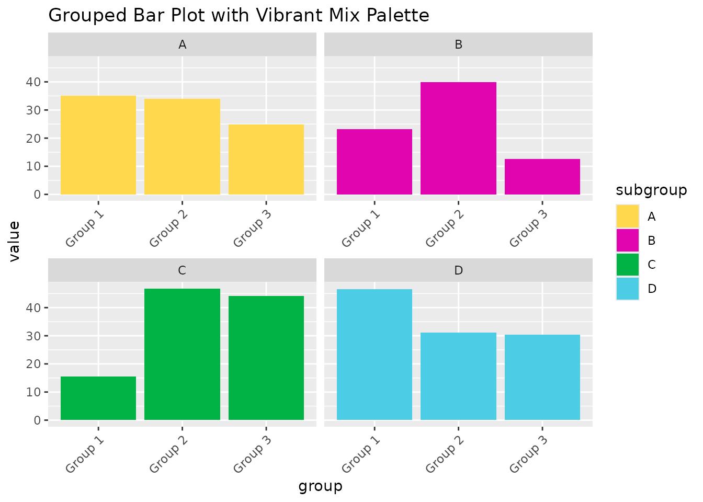

Introduction
This vignette demonstrates how to use the color palettes and ggplot2
scales provided by the cute package.
Basic Usage
Extracting Colors
You can extract colors from a palette using the
style_palette function:
colors <- style_palette("blue_gradient", 3)
print(colors)
#> [1] "#B0E3FC" "#4DCCE6" "#0070A5"Using in ggplot2
Discrete Color Scale
set.seed(123)
df <- data.frame(
x = rnorm(100),
y = rnorm(100),
category = sample(letters[1:5], 100, replace = TRUE)
)
ggplot(df, aes(x, y, color = category)) +
geom_point(size = 3) +
scale_color_style(option = "vibrant_mix") +
ggtitle("Scatter Plot with Vibrant Mix Palette")Fill Scale
df_summary <- data.frame(
group = c("A", "B", "C", "D", "E"),
value = c(20, 35, 15, 40, 30)
)
ggplot(df_summary, aes(x = group, y = value, fill = group)) +
geom_bar(stat = "identity") +
scale_fill_style(option = "warm_spectrum") +
ggtitle("Bar Plot with Warm Spectrum Palette")Advanced Usage
Continuous Color Scale
df_heatmap <- expand.grid(x = 1:20, y = 1:20)
df_heatmap$z <- with(df_heatmap, sin(x/2) * cos(y/4))
ggplot(df_heatmap, aes(x, y, fill = z)) +
geom_tile() +
scale_fill_style_c(option = "cool_calm") +
ggtitle("Heatmap with Cool Calm Palette")Reversed Palette
df_line <- data.frame(
x = 1:100,
y1 = cumsum(rnorm(100)),
y2 = cumsum(rnorm(100)),
y3 = cumsum(rnorm(100))
)
ggplot(df_line, aes(x = x)) +
geom_line(aes(y = y1, color = "Line 1"), size = 1) +
geom_line(aes(y = y2, color = "Line 2"), size = 1) +
geom_line(aes(y = y3, color = "Line 3"), size = 1) +
scale_color_style(option = "pastel", direction = -1) +
ggtitle("Line Plot with Reversed Pastel Palette")
#> Warning: Using `size` aesthetic for lines was deprecated in ggplot2 3.4.0.
#> ℹ Please use `linewidth` instead.
#> This warning is displayed once every 8 hours.
#> Call `lifecycle::last_lifecycle_warnings()` to see where this warning was
#> generated.Combining Multiple Palettes
df_grouped <- data.frame(
group = rep(c("Group 1", "Group 2", "Group 3"), each = 4),
subgroup = rep(c("A", "B", "C", "D"), 3),
value = runif(12, 10, 50)
)
ggplot(df_grouped, aes(x = group, y = value, fill = subgroup)) +
geom_bar(stat = "identity", position = "dodge") +
scale_fill_style(option = "vibrant_mix") +
facet_wrap(~subgroup, scales = "free_x") +
theme(axis.text.x = element_text(angle = 45, hjust = 1)) +
ggtitle("Grouped Bar Plot with Vibrant Mix Palette")